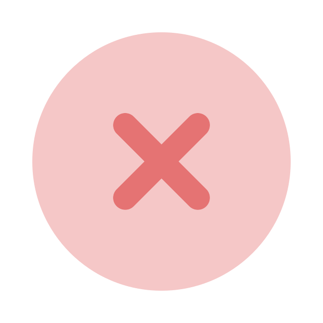
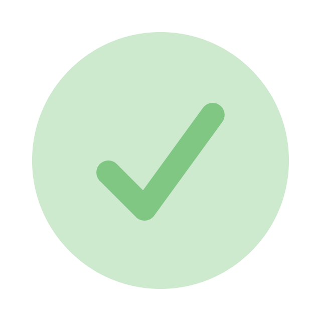

| Topic | Question Snippet | Result |
|---|---|---|
| Physics | What is the cosine of the following sequence |
 |
| Physics | What is the weight difference between the following |
 |
| Algebra | Which of the following equations works best to fix |
|
|